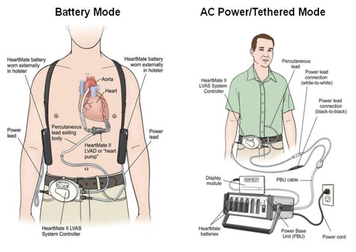

The CSCD Center solicits applications for Pilot Research Projects.
Pilot Project 1 (PP1): An Evaluation of Mobile Care App as Self-Management Tool in
Patients with Left-Ventricular Assist Devices. PI,
Jesus Casida PhD, RN, School of
Nursing, Co-I,
Francis D. Pagani MD, PhD, Surgical Director, Adult Heart
Transplantation and Director, Center for Circulatory Support Cardiovascular Center,
and Co-I,
James Aikens, Department of Family Medicine
An implantable Left-Ventricular Assist Device (LVAD) provides mechanical circulatory support
(MCS) and is used as a bridge or an alternative to heart transplant for patients with
advanced heart failure. It can avert death and/or liberate patients from crippling heart
failure symptoms with an ultimate goal to improve health and quality of life (QOL).

Despite the refinement in MCS technology, achieving this goal remains a problem for patients
and their caregivers due to the complexity of managing the LVAD in home settings.
Tasks and procedures performed daily by patients and/or their caregivers are directed at
ensuring the functionality of the LVAD components, troubleshooting varying levels of alarms,
and maintaining the patients' overall health.
Studies have shown that at 6 months post hospital discharge, patients are dependent on their
caregivers for implementing the LVAD regimen. During this period, they are overwhelmed with
the complexity of the regimen, and have low levels of self-confidence (i.e., self-efficacy)
with LVAD care at home. Some investigators have speculated that low levels of self-efficacy
may have resulted in low adherence to the regimen. Low adherence may have contributed to the
high incidence of LVAD complications causing 45% to 70% of hospital readmissions within 6
months post discharge.
To improve patients' and caregivers' self-efficacies and adherence to the complex LVAD
regimen, our research team recently developed the UM-VAD Care Mobile App. The App is used to
support patients and/or caregivers to correctly and confidently implement the regimen.
It alerts them to complete the regimen, and allows the healthcare provider (i.e., LVAD
coordinator) to assess abnormal results or mechanical issues requiring intervention. Additionally, the App provides skill reviews of content (e.g., video demonstration) about
technical and non-technical tasks for LVAD self-management (SM).
The purpose of this study is to evaluate the feasibility of the UM-VAD Care App as a SM tool
for LVAD patients and/or caregivers, and to pilot test it in an out-patient MCS program.
Specific aims are:
- Aim #1 (Phase I): To evaluate the acceptability and usability of the UM-VAD Care
App and the competency of its users. Self-report questionnaires and interviews will
be used to accomplish this aim.
- Aim # 2 (Phase II):To obtain preliminary efficacy data of the UM-VAD Care App as a
SM tool in patients with long-term LVAD. This phase will establish preliminary
estimates of the effects of the App on (1) patient's and caregiver's self-efficacies,
(2) adherence to the LVAD care regimen; (3) complications; and (4) the patients’
overall health status and (5) QOL.
The results of Phase I will be used to modify the features of the App. After
completion of Phase II we will expand the App to another platform (Android™),
further refine study procedures and design a randomized clinical trial.
The results of this research will advance the science of SM in patients with
complex life-sustaining technology.